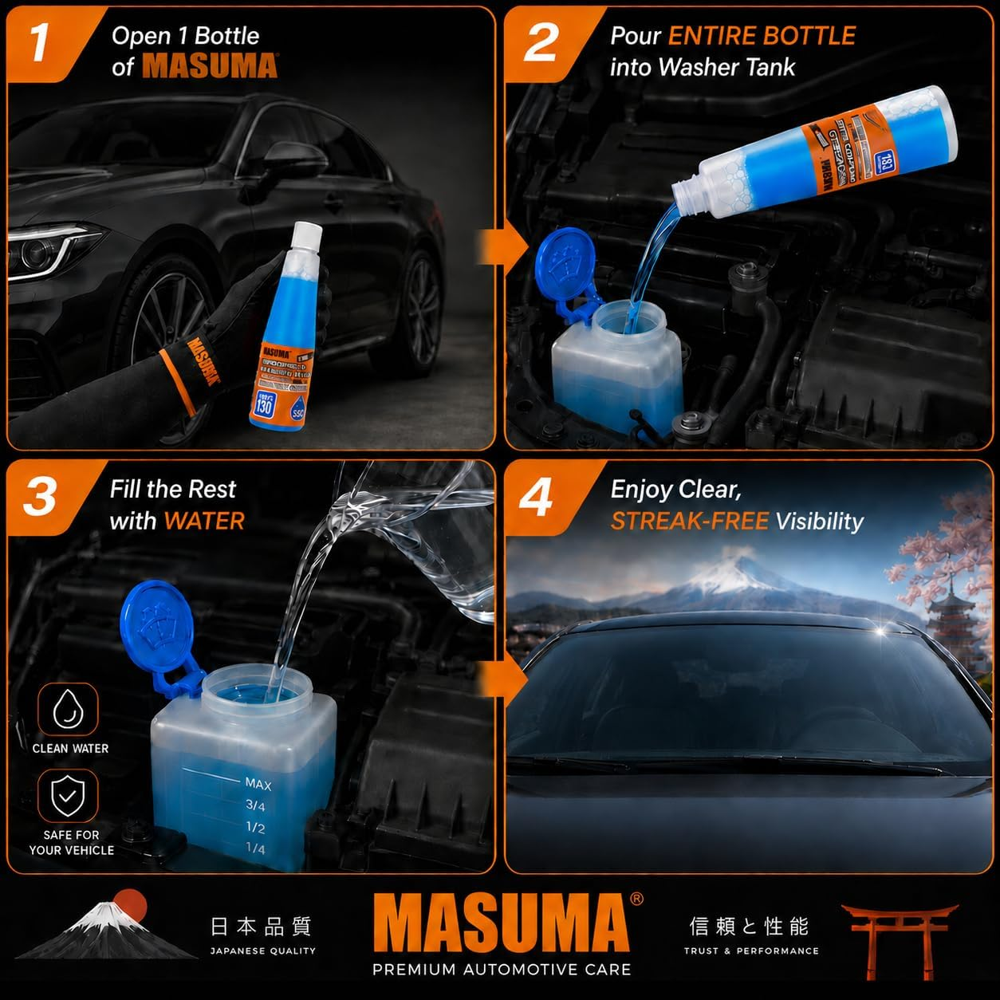
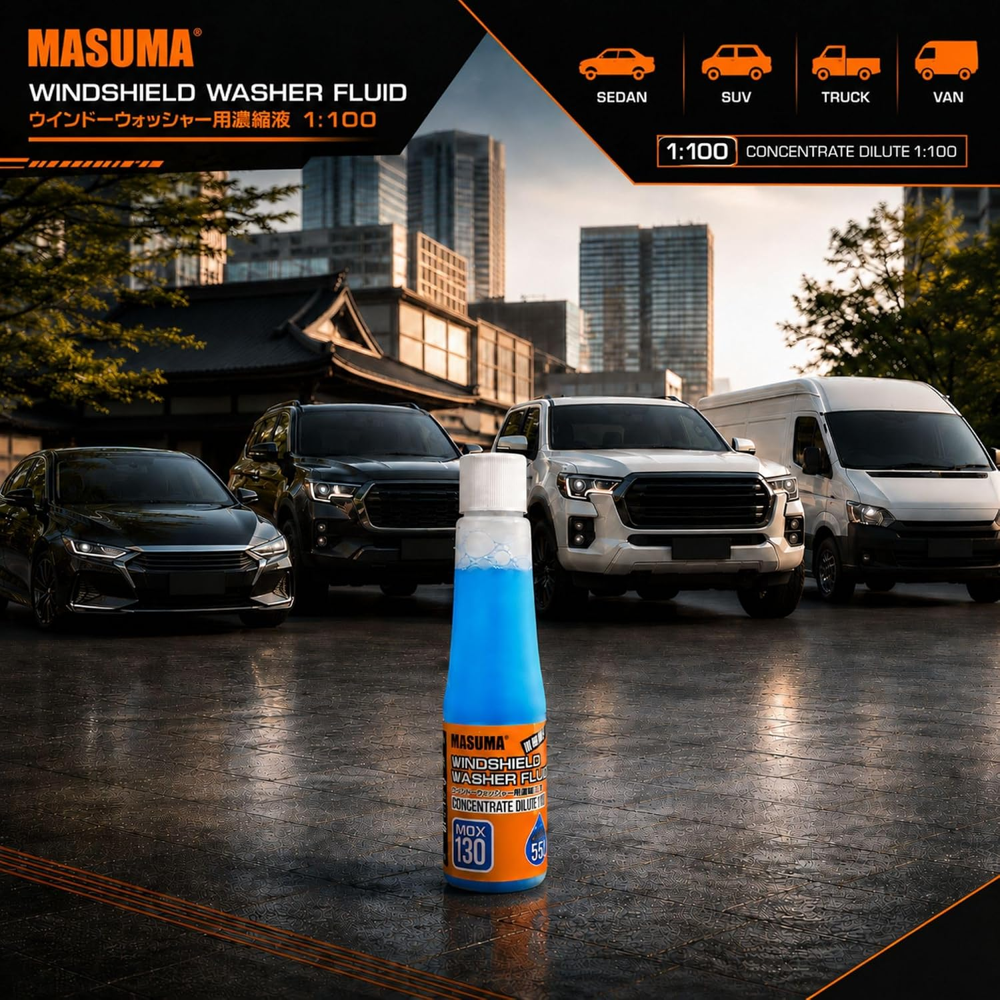
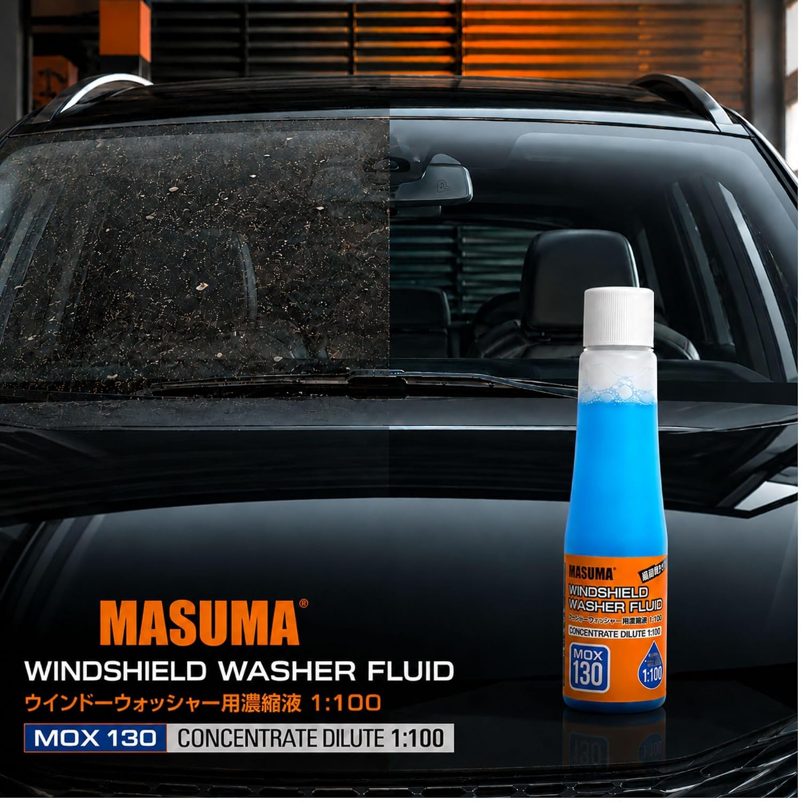

Overview
Aoura Products, in partnership with Marinick, is proud to announce the joint launch of the MASUMA Japanese Windshield Washer Fluid Concentrate (MOX-130) to our growing portfolio of premium automotive consumables. Sourced and developed with rigorous Japanese quality standards, this compact yet powerful formulation is designed to deliver crystal-clear visibility and reliable cleaning performance for all vehicle types.

Japanese High-Performance Formula
Engineered for maximum effectiveness, the MASUMA MOX-130 quickly removes dirt, dust, road grime, bugs, and oily residue. Its streak-free formulation ensures that drivers maintain a clear windshield in all driving conditions, enhancing safety and overall driving comfort.
1:100 Concentration Efficiency
One of the most notable features of the MASUMA MOX-130 is its highly efficient 1:100 concentration ratio. A single 55ml bottle dilutes to produce up to 5.5 liters of ready-to-use washer fluid. This extreme concentration not only offers excellent value to end-users but also significantly reduces plastic waste and logistics footprint across the supply chain.
To use, simply pour the concentrate into the washer reservoir and add water. The fast-dissolving formula mixes instantly for convenient, hassle-free operation.

Universal Compatibility
The MASUMA washer fluid concentrate is universally compatible across a wide spectrum of vehicles, including cars, SUVs, pickups, vans, and heavy-duty trucks. When diluted as directed, it is completely safe for use on windshields, internal washer systems, and delicate wiper blades without causing premature wear or degradation.
